Edición de gráficos
¿Cómo cambiar el tipo de gráfico?
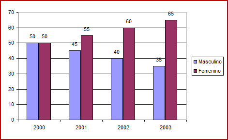- Seleccione la gráfica con el ratón
-
Vaya a la pestaña "Diseño" (Design) y seleccione "Cambiar tipo de gráfico" (Change graph type) para seleccionar otro tipo de gráfico.
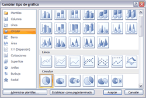 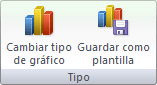
- Inmediatamente cambiará el tipo de gráfico por el seleccionado.
¿Cómo cambiar los datos del gráfico?
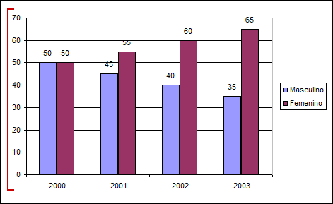Al editar un gráfico también podemos cambiar algún valor o número en la gráfica. Esto se puede hacer de la siguiente forma:
-
Vaya al menú "Diseño" (Design).
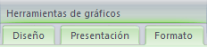
-
Para apreciar los datos que se graficaron, haga clic en "Seleccionar datos" (Select data).
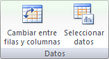
¿Cómo cambiar los colores del gráfico?
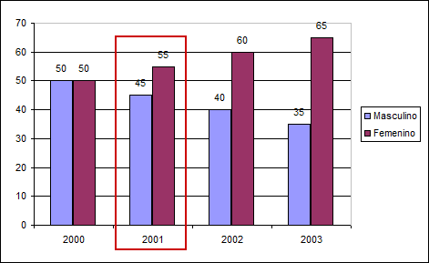Puede también cambiar los colores del gráfico.
- Seleccione la gráfica con el ratón (mouse).
-
Haga clic en el menú "Diseño" (Design).
-
El submenú "Estilos de diseño" (Chart Styles) permite cambiar el estilo del gráfico, el cual puede ser en color y forma.
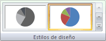
¿Cómo cambiar los ejes del gráfico?
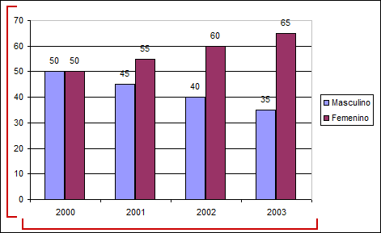Los ejes X y Y se pueden cambiar para tener de diferente forma la gráfica. Esto se hace de la siguiente forma:
- Seleccione la gráfica con el ratón (mouse)
-
Vaya al menú "Presentación" (Layout)
-
En el grupo de "Ejes" (Axes) se podrá decidir qué ejes se muestran o bien si se desea visualizar la cuadrícula que acompaña a la gráfica.
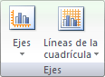
¿Cómo cambiar los ejes del gráfico?
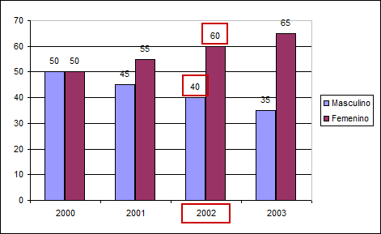¿Recuerda que dentro de la sección rótulos se encuentran las etiquetas de las categorías, series y valores? Es decir, si desea que lleve el nombre de todas las categorías y ver en la gráfica los valores de cada dato. Bueno, eso también usted lo puede cambiar.
- Seleccione la gráfica con el ratón (mouse)
-
Vaya al menú "Presentación" (Layout).
-
En el grupo de "Etiquetas"(Labels) se establece qué etiquetas de texto se visualizarán en el gráfico y en qué posición, sólo haga clic en "Etiquetas de datos" (Data Labels).
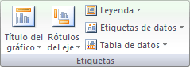
¿Cómo cambiar los fondos del gráfico?
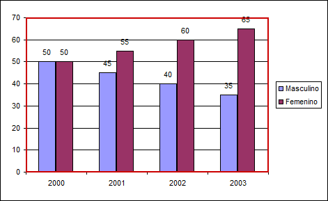Por default las gráficas se generan con un fondo blanco, pero usted lo puede cambiar a otro color. Es muy sencillo, veamos cómo se realiza el cambio.
- Seleccione la gráfica con el ratón (mouse)
-
Vaya al menú "Formato" (Format).
-
Si desea cambiar el contorno del recuadro de la gráfica, seleccione "Contorno de forma" (Shape outline) y elija el color del contorno del recuadro.
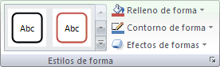
- Si desea cambia el fondo del gráfico, seleccione "Relleno de forma" (Shape fill) y elija el color que desea.
- Inmediatamente se verán los cambios.
¿Cómo ver los Menú Contextual?

La otra forma es usando el menú contextual del gráfico.
- Haga clic derecho del ratón (mouse)
-
Se despliega el menú contextual.
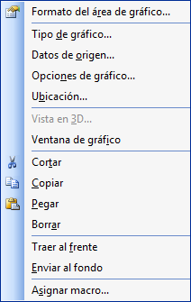 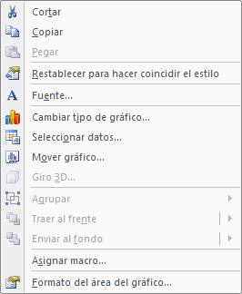